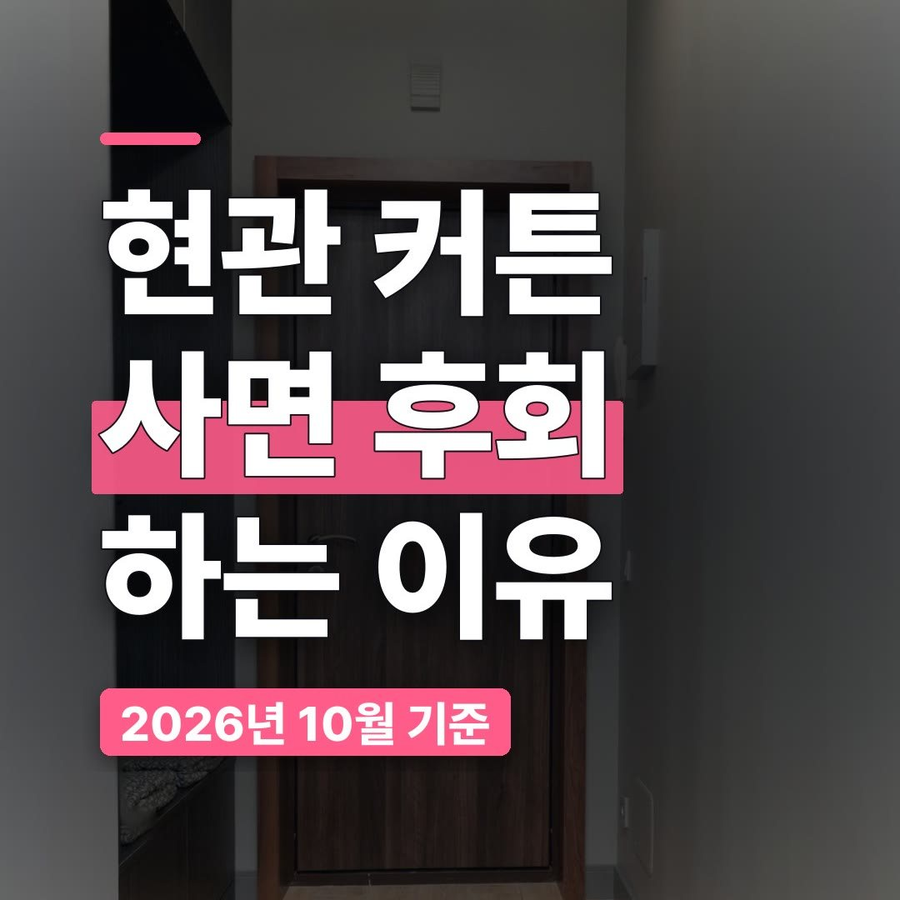
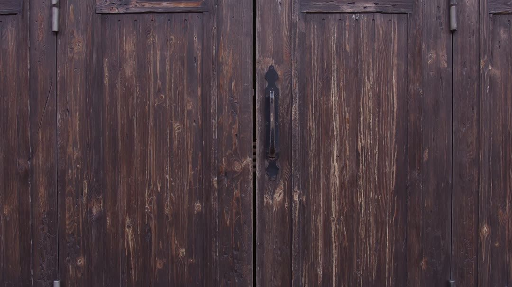
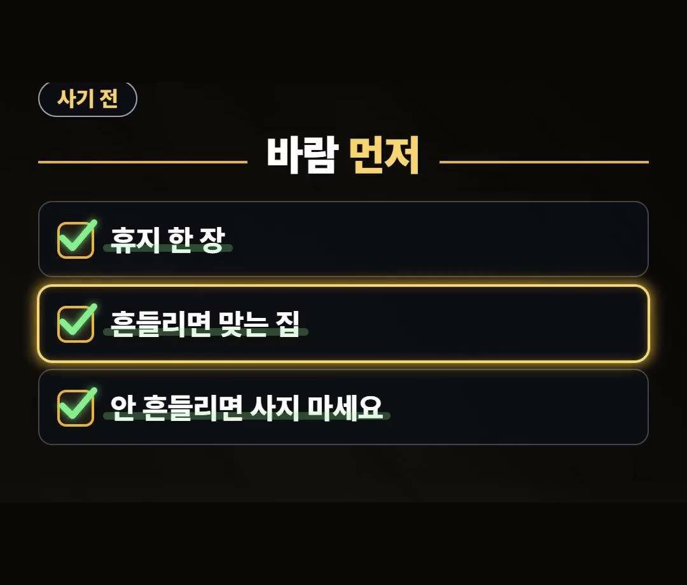
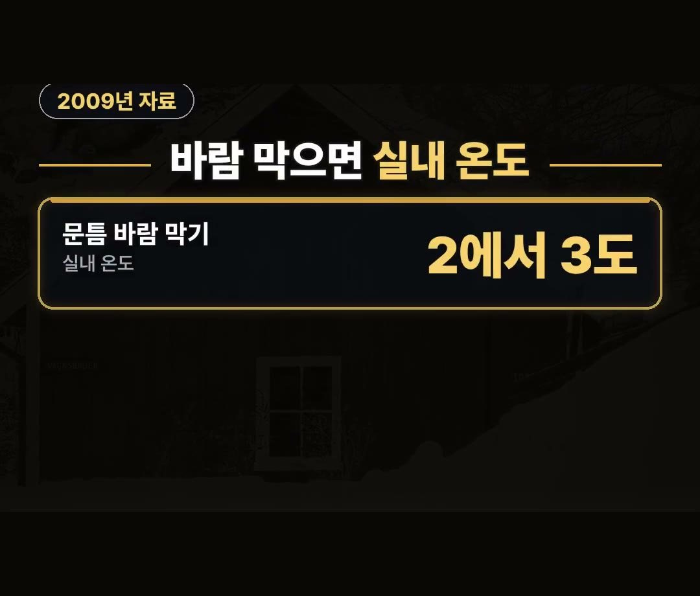
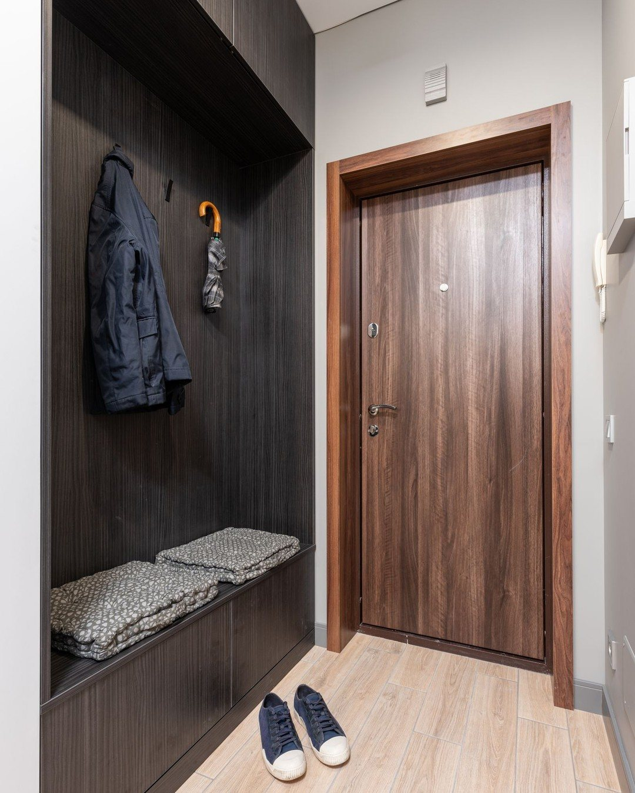

현관 방풍 커튼, 중문 없는 집이 사기 전에 볼 2가지
※ 이 글에는 제휴 링크가 포함되어 있으며, 링크를 통해 구매하시면 일정 수수료를 받을 수 있습니다. (가격은 같습니다)
※ 이 포스팅은 쿠팡 파트너스 활동의 일환으로, 이에 따른 일정액의 수수료를 제공받습니다.
현관 방풍 커튼은 딱 2가지만 기억하면 됩니다.
우리 집 현관에 정말 바람이 들어오는지, 그리고 문틈은 따로 막아야 한다는 것이에요.
이 글에서는 사기 전에 휴지 한 장으로 해 보는 방법과 2009년 정책브리핑의 숫자를 정리해 드릴게요.
현관 방풍 커튼은 바람이 들어오는 집에 맞는 물건이에요.
휴지 한 장을 대 봐서 흔들리는지부터 보고, 2009년 정책브리핑의 「문틈 바람만 막아도 실내 2에서 3도」 는 문틈을 막는 이야기라는 점을 기억하세요! 🚪

중문 없는 집, 현관 방풍 커튼이 궁금한 이유
중문이 없는 집은 현관문을 열고 닫을 때마다 찬 공기가 바로 집 안으로 들어오는 느낌을 받기 쉬워요.
현관 찬 바람이 거실까지 오는 것 같다면 현관 방풍 커튼을 한 번쯤 찾아보게 되죠.
상품 후기에는 설치가 간편하단 말이 있어요.
그런데 사기 전에 먼저 확인할 숨은 조건이 있어요.
바로 우리 집 현관에 바람이 실제로 들어오느냐는 거예요.

첫째, 휴지 한 장으로 바람부터 보기
방법은 간단해요.
현관에 휴지 한 장을 대 보세요.
- 휴지가 흔들린다: 바람이 들어오는 집이라 현관 방풍 커튼이 맞는 집
- 휴지가 안 흔들린다: 바람길이 다른 곳일 수 있으니 사지 마세요
돈을 쓰기 전에 휴지 한 장으로 먼저 확인해 보는 거예요.
휴지가 움직이지 않는데 커튼부터 사면, 막을 바람이 없는 곳에 돈을 쓰게 될 수 있어요.

둘째, 2009년 정책브리핑의 숫자 보기
2009년 정책브리핑 자료에 따르면 문틈 바람만 막아도 실내 온도가 2에서 3도 오른다고 해요.
- 자료: 2009년 정책브리핑
- 내용: 문틈 바람을 막으면 실내 온도 2에서 3도 오름
- 같이 할 것: 틈은 문풍지로
여기서 2에서 3도는 문틈 바람을 막았을 때의 이야기예요.
현관 방풍 커튼 하나만 달았을 때의 숫자로 넓혀서 보시면 안 돼요.
그래서 현관 방풍 커튼을 달더라도 문 틈은 문풍지로 같이 막아 두는 게 좋아요.

현관 방풍 커튼, 이런 집이라면 살펴보세요
고를 때 볼 점을 우리 말로 정리해 봤어요.
- 현관에 휴지를 대 봤을 때 흔들리는 집
- 중문이 없어서 현관 찬 바람이 거실까지 오는 집
- 문틈은 문풍지로 같이 막을 수 있는 집
이 세 가지에 해당한다면 현관 방풍 커튼을 살펴볼 만해요.
반대로 휴지가 흔들리지 않는다면 바람이 들어오는 곳을 먼저 찾아보는 게 순서예요.

현관 방풍 커튼 사기 전, 순서대로 해 보기
지금까지 이야기를 순서로 묶으면 이렇게 돼요.
1. 현관문을 닫은 채 문 주변에 휴지 한 장을 대 보기
2. 휴지가 흔들리면 바람이 들어오는 집이니 현관 방풍 커튼 살펴보기
3. 휴지가 안 흔들리면 커튼은 사지 말고 바람길을 다시 찾아보기
4. 커튼을 달더라도 문 틈은 문풍지로 같이 막기
이렇게 하면 우리 집에 맞는지부터 보고 고를 수 있어요.
휴지 한 장으로 해 보는 확인은 돈이 들지 않으니, 장바구니에 담기 전에 꼭 한 번 해 보세요.
특히 중문이 없는 집이라면 현관 쪽 바람이 집 안 어디까지 오는지도 같이 느껴 보시면 좋아요.
정리
- 현관 방풍 커튼은 사기 전에 휴지 한 장으로 바람부터 보세요 (흔들리면 맞는 집, 안 흔들리면 사지 마세요)
- 2009년 정책브리핑 자료에 따르면 문틈 바람만 막아도 실내 온도가 2에서 3도 오른다고 해요
- 문 틈은 문풍지로 같이 막아 두세요
링크는 아래에 모아 두었어요.
📌 2026년 10월 기준 정보예요. 가격은 시기에 따라 달라질 수 있어요.
· 정책브리핑 겨울철 에너지 절약법 (2009년 11월 29일 · 에너지관리공단 추천)
· 토스쇼핑 현관커튼 중문 방한 바람막이 커튼 상품·리뷰 (2026년 10월 29일 기준 · 리뷰 1개)
사진·영상영상 화면: Pexels (Damir K, Hanna Pad, Max Vakhtbovych, Monstera Production, Necla Aydın, cottonbro studio)
사진: Pexels (Max Vakhtbovych)